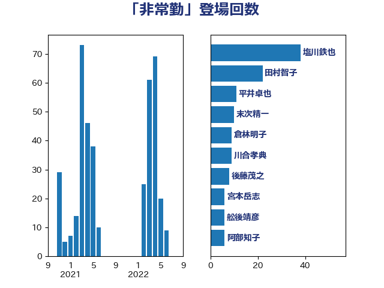

単語「非常勤」

| 塩川鉄也 | 日本共産党 | 38 回 |
| 田村智子 | 日本共産党 | 22 回 |
| 平井卓也 | 自由民主党 | 11 回 |
| 末次精一 | 立憲民主党 | 10 回 |
| 倉林明子 | 日本共産党 | 9 回 |
| 川合孝典 | 国民民主党 | 9 回 |
| 後藤茂之 | 自由民主党 | 8 回 |
| 宮本岳志 | 日本共産党 | 6 回 |
| 舩後靖彦 | れいわ新選組 | 6 回 |
| 阿部知子 | 立憲民主党 | 6 回 |
| 串田誠一 | 日本維新の会 | 5 回 |
| 宮本徹 | 日本共産党 | 4 回 |
| 寺田静 | 無所属 | 4 回 |
| 田村まみ | 国民民主党 | 4 回 |
| 萩生田光一 | 自由民主党 | 4 回 |
| 高良鉄美 | 無所属 | 4 回 |
| 上野通子 | 自由民主党 | 3 回 |
| 伊波洋一 | 無所属 | 3 回 |
| 勝部賢志 | 立憲民主党 | 3 回 |
| 吉田はるみ | 立憲民主党 | 3 回 |
| 小沼巧 | 立憲民主党 | 3 回 |
| 川田龍平 | 立憲民主党 | 3 回 |
| 斎藤嘉隆 | 立憲民主党 | 3 回 |
| 末松信介 | 自由民主党 | 3 回 |
| 杉尾秀哉 | 立憲民主党 | 3 回 |
| 藤田文武 | 日本維新の会 | 3 回 |
| 上田清司 | 国民民主党 | 2 回 |
| 伊藤岳 | 日本共産党 | 2 回 |
| 加藤勝信 | 自由民主党 | 2 回 |
| 坂井学 | 自由民主党 | 2 回 |
| 坂本哲志 | 自由民主党 | 2 回 |
| 大口善徳 | 公明党 | 2 回 |
| 守島正 | 日本維新の会 | 2 回 |
| 小沢雅仁 | 立憲民主党 | 2 回 |
| 岡本あき子 | 立憲民主党 | 2 回 |
| 岸信夫 | 自由民主党 | 2 回 |
| 岸真紀子 | 立憲民主党 | 2 回 |
| 打越さく良 | 立憲民主党 | 2 回 |
| 梅村聡 | 日本維新の会 | 2 回 |
| 石原正敬 | 自由民主党 | 2 回 |
| 若松謙維 | 公明党 | 2 回 |
| 菅義偉 | 自由民主党 | 2 回 |
| 金子恭之 | 自由民主党 | 2 回 |
| 鈴木敦 | 国民民主党 | 2 回 |
| 関芳弘 | 自由民主党 | 2 回 |
| 高野光二郎 | 自由民主党 | 2 回 |
| おおつき紅葉 | 立憲民主党 | 1 回 |
| 一谷勇一郎 | 日本維新の会 | 1 回 |
| 三木亨 | 自由民主党 | 1 回 |
| 上川陽子 | 自由民主党 | 1 回 |
| 仁木博文 | 無所属 | 1 回 |
| 伊佐進一 | 公明党 | 1 回 |
| 古川禎久 | 自由民主党 | 1 回 |
| 吉川元 | 立憲民主党 | 1 回 |
| 吉川沙織 | 立憲民主党 | 1 回 |
| 吉良よし子 | 日本共産党 | 1 回 |
| 城井崇 | 立憲民主党 | 1 回 |
| 大石あきこ | れいわ新選組 | 1 回 |
| 山添拓 | 日本共産党 | 1 回 |
| 山田美樹 | 自由民主党 | 1 回 |
| 掘井健智 | 日本維新の会 | 1 回 |
| 梅村みずほ | 日本維新の会 | 1 回 |
| 梶山弘志 | 自由民主党 | 1 回 |
| 森屋宏 | 自由民主党 | 1 回 |
| 櫛渕万里 | れいわ新選組 | 1 回 |
| 水岡俊一 | 立憲民主党 | 1 回 |
| 沢田良 | 日本維新の会 | 1 回 |
| 片山大介 | 日本維新の会 | 1 回 |
| 福島みずほ | 社会民主党 | 1 回 |
| 福島伸享 | 無所属 | 1 回 |
| 笠浩史 | 無所属 | 1 回 |
| 紙智子 | 日本共産党 | 1 回 |
| 義家弘介 | 自由民主党 | 1 回 |
| 藤井比早之 | 自由民主党 | 1 回 |
| 赤羽一嘉 | 公明党 | 1 回 |
| 阿部司 | 日本維新の会 | 1 回 |
| 青山繁晴 | 自由民主党 | 1 回 |
| 音喜多駿 | 日本維新の会 | 1 回 |
| 高木かおり | 日本維新の会 | 1 回 |